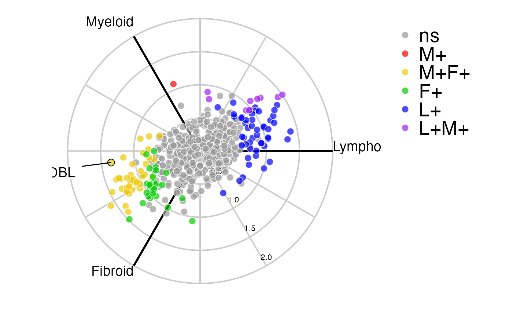

This function creates a radar plot using 'ggplot' for a three-way comparison
radial_ggplot( polar, colours = c("green3", "cyan", "blue", "purple", "red", "gold2"), non_sig_colour = "grey60", colour_scale = "discrete", continuous_shift = 1.33, label_rows = NULL, arrow_length = 1, grid = NULL, fc_or_zscore = "zscore", label_size = 5, colour_code_labels = TRUE, label_colour = NULL, grid_colour = "grey80", axis_colour = "black", axis_title_size = 5, axis_label_size = 3, marker_alpha = 0.7, marker_size = 3, marker_outline_colour = "white", marker_outline_width = 0.5, axis_angle = 1/6, legend_size = 20, ... )
| polar | A polar object with the pvalues between groups of interest and
polar coordinates. Created by |
|---|---|
| colours | A vector of colour names or hex triplets for each of the six groups. Default = c("green3", "cyan", "blue", "purple", "red", "gold2"). Colours are assigned in order: group1+, group1+group2+, group2+, group2+group3+, group3+, group1+group3+. |
| non_sig_colour | The colour for non-significant markers (default = "grey60"). |
| colour_scale | whether to use a "discrete" or "continuous" colour scale (default = "discrete"). |
| continuous_shift | the number of radians (between 0 and 2) corresponding to the angle to offset the continuous colour scale by. The continuous colour scale is calculated by converting the angle to hue where 0 corresponds to red and 2 to magenta (default = 1.33). |
| label_rows | A vector of row names or numbers to label. |
| arrow_length | length of label arrow (default = 1). |
| grid | An optional grid object. If NULL this will be calculated using
default values of |
| fc_or_zscore | Whether to use the z-score or fold change as magnitude. Options are 'zscore' (default) or 'fc'. |
| label_size | Font size of labels/annotations (default = 5). |
| colour_code_labels | Logical whether label annotations should be colour coded. If FALSE label_colour is used. |
| label_colour | Colour of annotation labels if not colour coded. |
| grid_colour | The colour of the grid (default="grey80"). |
| axis_colour | The colour of the grid axes and labels (default="black"). |
| axis_title_size | Font size for axis titles (default = 5) |
| axis_label_size | Font size for axis labels (default = 3) |
| marker_alpha | The alpha parameter for markers (default = 0.7). |
| marker_size | Size of the markers (default = 3). |
| marker_outline_colour | Colour for marker outline (default = white) |
| marker_outline_width | Width for marker outline (default = 0.5) |
| axis_angle | Angle for the radial axis labels in pi radians (default = 1/6). |
| legend_size | Size for the legend text (default = 20). |
| ... | Optional grid parameters to pass to
|
Returns a polar 'ggplot' object featuring variables on a tri-axis radial graph
Lewis, Myles J., et al. (2019). Molecular portraits of early rheumatoid arthritis identify clinical and treatment response phenotypes. Cell reports, 28:9
data(example_data) syn_polar <- polar_coords(sampledata = syn_example_meta, contrast = "Pathotype", groups = NULL, pvalues = syn_example_p, expression = syn_example_rld, p_col_suffix = "pvalue", padj_col_suffix = "padj", non_sig_name = "Not Significant", multi_group_prefix = "LRT", significance_cutoff = 0.01, fc_cutoff = 0.3) radial_ggplot(polar = syn_polar, label_rows = c("SLAMF6"))